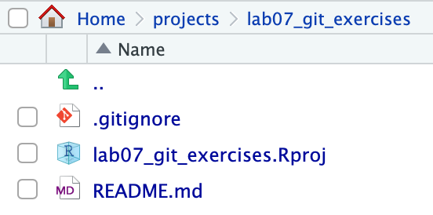
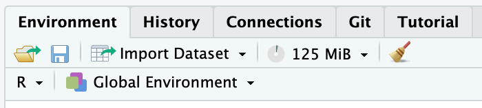
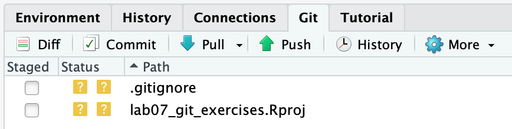
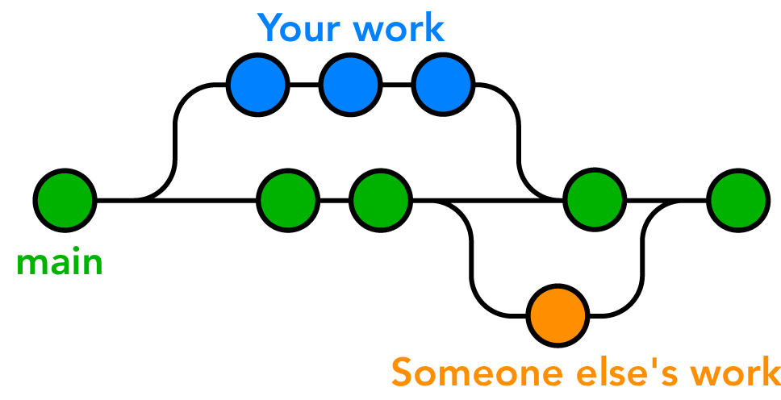

usethis::use_git_config(user.name = "YOUR_GITHUB_USERNAME", user.email = "THE_EMAIL_YOU_USED_TO_CREATE_YOUR_GITHUB_ACCOUNT")Lab 7: Collaborative Bio Data Science using git and GitHub via RStudio
Package(s)
Schedule
- 08.00 - 08.10: Midway evaluation
- 08.10 - 08.30: Recap of Lab 6
- 08.30 - 09.00: Lecture
- 09.00 - 09.15: Break
- 09.00 - 12.00: Exercises
Learning Materials
Please prepare the following materials
- Book: Happy Git and GitHub for the useR – Read chapters 1 (intro), 20 (basic terms), 22 (branching), 23 (remotes). Do not pay much attention to syntax of specific commands, because we are not going to use them during the exercises, focus on the idea
- Book: Introduction to Data Science - Data Analysis and Prediction Algorithms with R by Rafael A. Irizarry: Chapter 40 Git and GitHub – Some of the information here is redundant with the previous book, but very important thing is a visualization of basic git actions and screenshots of how to perform them using RStudio
- Video: RStudio and Git - an Overview (Part 1) – Basic git concepts, for those who prefer listen rather than read. Books, however, contain more information
- Video: How to use Git and GitHub with R – Basic operating on git in RStudio. Complementary to second book. You can skip to 2:50, we are not going to link to git manually either way
Unless explicitly stated, do not do the per-chapter exercises in the R4DS2e book
Learning Objectives
A student who has met the objectives of the session will be able to:
- Explain why reproducible data analysis is important
- Identify associated relevant challenges
- Describe the components of a reproducible data analysis
- Use RStudio and GitHub (git) for collaborative bio data science projects
Exercises
Prologue
Using git is completely central for collaborative bio data science. You can use git not only for R, but for any code-based project in any language or code editor. From small research groups to tech giants, almost every bioinformatics, data science or software engineering project in the world uses git to manage code versions and collaboration.
Learninggit is a key Bio Data Science skill that will be expected of you for almost any bioinformatics job! Today, you will take your first steps - Happy Learning!

- T1: Find the
GitHubrepository for theggplot2R-package - Q1: How many Contributors are there?
- T1: Find the
GitHubrepository for theLinux kernel - Q2: How many Contributors are there?
- Q3: Discuss in your group why having an organised approach to version control is central? And consider the simple contrast of the challenges you were facing when doing the course assignments.
Getting Started
First, make sure to read and discuss the feedback you got from last week’s assignment!
The following exercises have to be done in your groups! You must move at the same pace and progress together as a team through the exercises!
Be aware of which editor you are using in RStudio! You must work in the “Visual” editor instead of the “Source” editor. ALL OF YOU! If one of you works in a different editor, it could cause a conflict issue!
GitHub is the place for collaborative coding and different group members will have to do different tasks in a specific order, to make it through the exercises together, so… Team Up and don’t rush it!
First, select a team Captain. That person will have to carry out specific tasks. Tasks under Team should be carried out by all group members (including the captain), but if Crew is stated, then those tasks are carried out by everyone except the Captain.
It is important to note that tasks are sequential, so if a task is assigned to the Captain, then the Crew has to await completion before proceeding!
Team
Setting up your Credentials and Personal Access Token
Before you do anything relating to GitHub repositories, you have to inform GitHub of who you are and let GitHub verify what your account is. Without authentication, anyone could be pushing to your repo or pulling from your private repos!
- In the
Console, run the command:
- In the
Console, run the command:
usethis::create_github_token()- Log into GitHub if not logged in already
- Under Note, where it says DESCRIBE THE TOKEN’S USE CASE, delete the text and write e.g.
R for Bio Data Science lab 7 git exercises - Under Expiration, where it says 30 days, change that to 90 days
- Do not change any other setting, but simply scroll down and click Generate token
- A new Personal access tokens (classic) page will appear, stating your personal access token, which starts with
ghp_, go ahead and copy it - Store the PAT somewhere safe, e.g. in a password management tool. It is effectively your password when connecting to the repository via R.
- Again in the Console, run the below command and enter your PAT when prompted for the password:
gitcreds::gitcreds_set()Before proceeding, make sure that ALL group members are at this stage of the exercises.
Making your Credentials and Personal Access Token stick around
By default, your credentials and PAT are cleaned every 15 minutes. This is annoying, so let’s fix it!
First of all RStudio is a Graphical User Interface (GUI), meaning, that it allows you to do pointy-clicky stuff, but at the end of the day, everything happens at the command line. That also goes for git, so your button-pushing simply gets converted into commands, which are executed in the terminal.
If you are not comfortable with the terminal, don’t worry! We will only do a short visit to the command line to do a few things that are not available in the GUI and then return to the pointy-clicky stuff:
- In the
Consolepane, click theTerminaltab, which gains you access to the Linux server that RStudio is running on. You should see something like:
user@pupilX:~/projects/lab07_git_exercises$- Enter the command:
git config --global --list- Recall you entered your GitHub username and mail? This is where it ended up! Note the
credential.helper=cache, which tells us that the credentials are being cached. Now, enter:
git config --global credential.helper 'cache --timeout=86400'- Re-run the command
git config --global --listand confirm the change - Go back to your
Consoleand run the commandgitcreds::gitcreds_set(). Select option 2, and re-enter your PAT. - If you didn’t get a list of options in the prior step, restart your R session and retry.
Congratulations! You have now used the command line and you will forever be part of an elite few, who know that everything you see in hacker-movies is BS, except perhaps for Wargames and Mr. Robot! Also, your PAT will now be good for 24h
Team
- Go to GitHub and log in
- In the upper right corner, click on your profile picture. Then in the menu, click on “Your Organizations” and go into rforbiodatascienceYY (where
YYis the current year). If you are not a member, contact a TA before proceeding. - Go into repositories (on the top left).
Captain
Creating the repository
- Click “New repository”
- Since you created the project from the organisation, the default owner of the repository is the organisation (rforbiodatascienceYY). Verify and keep that, please.
- Name the repository
groupXX, whereXXis your group number, e.g.02 - Select
Public - Tick
Add a README file - Click
Create repository - Click
Settingsin the menu line starting with<> Code - Under
Access, clickCollaborators and teams - Click
Add people - Write a group members username and select the role “Maintain”.
- Select
Add username to this repository - Repeat for all group members
Crew
- Refresh the page and go into the new repository. If you don’t see it, check your mail and accept your invitation to join the repository.
Captain
Cloning the repository
- Click here to go to the course RStudio cloud server and login
- In the upper right corner, click on

<your_current_project_name> - Choose

New Project... - Select Version Control
- Select
 Git
Git - Under
Repository URL:, enterhttps://github.com/rforbiodatascienceYY/groupXX, where again you replaceYYwith the current year and replaceXXwith your group number, e.g.02. - Under
Project directory name:, enterlab07_git_exercises - Under
Create project as a subdirectory of:, make sure that is says~/projects - Click
Create Project
Congratulations! You have just cloned your first GitHub repository!
In your Files pane, you should now see:

…and now in your Environment pane, you should see a new Git tab:

If you click the Git tab, you should see:

Pushing the project basics to GitHub
- In the
Gittab, tick the 2 boxes understaged(we will get into what.gitignoreis later) - Click
commit - In the upper right corner, add a
Commit message, e.g “Project basics” - Click the
Commitbutton - A pop-up, will give you details on your commit, look through them and then click
Close - Click the

Pullbutton, then the
Pushbutton
Crew
- Make sure that you can see the
lab07_git_exercises.Rprojand.gitignorefiles that your captain just pushed in the GitHub repository before proceeding further - Follow the instructions under Cloning the repository that your captain followed a few moments ago (but not the Pushing the project basics to GitHub)
Team
Setting up git’s pull strategy
In the Console, run the command:
usethis::use_git_config(pull.rebase = "false")
For now, you can ignore what pull.rebase does, but click here if you are curious
When pulling from a repository that has received new commits between your last pull and your last commit, you can run into the problem that there are new commits with changes in the same places of the code as you have been editing. In this case, a rebase will simply apply your changes on top of whatever modifications happened in those new commits. This can sometimes break the code and it can be hard to understand why. Setting pull.rebase = "false" will make it so that you are forced to solve the conflicting changes manually when you run into that situation. You can find a much more technical explanation on merging vs. rebasing here.
pull.rebase at all, the first time that your pull conflicts with existing commits git will simply ask you to set it. Doing it now simply avoids the error message from appearing later.
Your first collaboration
Team
- Create a new Quarto document, title it
student_idand save id asstudent_id.qmd, wherestudent_idis your… You guessed it! Make sure that “Use visual markdown editor” is checked. - In the Environment pane, click the Git tab
- Tick the box under Staged corresponding to your newly created
student_id.qmd. If you do not see the document in this window after saving, click the refresh button on the top right of the Git tab. - Click
Commit - In the upper right corner, add a
Commit message, e.g “First commit by student_id” - Click the
Commitbutton - A pop-up, will give you details on your commit, look through them and then click
Close - Now, very important ALWAYS click the
Pullbutton BEFORE clicking the Pushbutton - Clicking
Pull, you should see “Already up to date.” - Then click
Push
- Q4: Discuss in your group what each of the steps did and why they are performed?
Your next collaboration
That first collaboration was easy right!? Well, you were all working on different files…
Captain
- Create a new Quarto Document, title it “Group Document” and save it as
group_document.qmd - Using markdown headers, create one section for each group member (including yourself). Here, you can use your names, student ids or whatever you deem appropriate
- Again in the
Environmentpane, make sure you are in thegittab and then tick the box next togroup_document.qmd. As before, click the refresh button if you can’t see it. - Click
Commit - Add a commit message, e.g. “Add group document”
- Click the
Commitbutton - Click
Pull(You should be “Already up to date.”) - Click
Push - Click
Close - Again, go to the group GitHub and confirm that you see the new document you just created
Team
- Click
Pulland confirm that you now also have the filegroup_document.qmd - Open
group_document.qmdand find your assigned section - In your section and your section only, enter some text, add a few code chunks with some R code
- Save the document
- Now again, find the
group_document.qmdin thegittab of theEnvironmentpane and tick the box underStaged - Click
Commit - Note how your changes to the document are highlighted in green
- Add a commit message, e.g. “Update the STUDENT_ID section” and click
Commitand thenClose - Like before, always
Pullbefore Pushing - Go to the group GitHub, find the
group_document.qmdand click it, do you see your changes?
Once everyone has added to their assigned section, everyone should do a pull/push, so everyone has the complete version of the group_document.qmd. If everything was done correctly there should be no merge conflicts, but contact a TA if anything went wrong.
Your first branching
Ok that’s pretty great so far - Right? The thing is… Consider, the ggplot2 repository, that you found in T1. Thousands of companies and even more thousands of people rely on ggplot for advanced data visualisation. What would happen, if you wanted to add a new feature or wanted to optimise an existing one, while people were actively installing your package? They would get what stage your code was in, which may or may not be functional - Enter branching!
Below here is an illustrated example where each circle is a git commit. The main branch is the stable version of the software that people can download. Your Work will be the feature or update that you personally are working on and Someone Else’s Work will be another team working on a different new feature or update. Before the last commit in main (the right-most green circle), note how both the Your Work and Someone Else’s Work branches have been merged onto the main branch.

Note: until not so long ago, the default name for the main branch used to be “master”. For obvious reasons, the software engineering world is moving away from the master/slave terminology…
In a git repository, there can be as many branches as you want. Software teams usually have guidelines on how to organize branches on a specific repository and it can vary substantially between teams and/or projects.
- Q5: Find the
ggplotGitHub repo again. How many branches there are?
Team
- Go to your RStudio session and in the Git tab of the Environment pane, click

New Branch - In branch name, enter your student id
- You should see a pop-up with the message
Branch 'STUDENT_ID' set up to track remote branch 'STUDENT_ID' from 'origin'.at the bottom, go ahead and clickClose - Next to where you clicked
New Branchjust before, it should now saySTUDENT_ID, click it and confirm that you seeSTUDENT_IDandmain - Look at the illustration above and understand that you have created a new branch
STUDENT_IDthat branches out from main and is equivalent to Your Work. Discuss this with your group if it is not clear. - Click
STUDENT_IDand you will get a confirmation that you are already on that branch and that you are up-to-date, clickClose - In the
group_document.qmdunder your section, using markdown, enter a new sub-header and name it e.g.New featureorNew analysis. As a reminder, make sure that you all use the “Visual” editor for the .qmd file. - Enter some text, a few code chunks with a bit of
R-code of your choosing and save the document - Again, in the Git tab, tick the box under staged and click
Commit - Add a commit message, e.g.
New feature from STUDENT_IDand clickCommit - Click
Close,Pull,Close,PushandCloseand then close the commit window - Go to your group GitHub and confirm that you now have at least 2 branches
- Make sure you are in the main branch and then click the
group_document.qmd, you should now not see your new feature/analysis that you added - On the left, where it says
main, click and select yourSTUDENT_ID, you should now see your new feature/analysis that you added
Congratulations! You have now successfully done your first branching!
Your first branch merging
Team
- Go to your groups GitHub page, at the top it should say
STUDENT_ID had recent pushes..., click theCompare & pull request - Your commit message will appear and where it says
Leave a comment, add a comment like e.g.I'm done, all seems to be working now!or similar - Click
Create pull request - It should now say
This branch have no conflicts with the base branch, confirm and clickMerge pull request - Click
Confirm mergeafter which it should now sayPull request successfully merged and closed - You have now fully merged, so go ahead and click
Delete branch - Revisit the previous illustration and compare with your branch workflow, make sure that everyone in the groups are on par here
- Finally return to your RStudio session and make sure you switch to the
mainbranch
Congratulations! You have now successfully done your first branch merge!
But wait, what was this Pull request??? What you actually did, was:
- Created a new branch
- Completed a new feature/analysis
- Pushed the new feature/analysis to GitHub
- Created a
Pull requestfor merging your branchSTUDENT_IDinto themainbranch - Approved and completed the
Pull request
Think about e.g. again the ggplot2 repo, if anyone could create a new branch and then do as described above, then there would be no way of making quality control. Therefore, typically such pull requests will have to be approved by someone. This can either be someone who is close-to-the-code e.g. in the case of ggplot2, that’d be someone like Hadley. In a company, then that might be some senior developer approving junior developers pull requests. At one point you might have seen something like “The main branch is unprotected”, this is exactly that!
Small note about the term Pull request
The name Pull request can be a bit counter-intuitive, because you are not requesting to pull the repository, but rather requesting to the maintainers that they pull your changes. Maybe, a more intuitive name would have been Merge request, which doesn’t leave much room for ambiguity. Actually, in most othergit repository hosting services aside from GitHub (e.g. GitLab) the equivalent feature is actually called Merge request.
Your first merge conflict
Okay, that’s all good an well. Seems easy and straight forward, right? Well, that is as long as we don’t have a conflict. A conflict is when two or more changes to one file are not compatible. In fact, let’s screw things up! We will be working with this file:
Top 10 Bio Data Science Languages of ALL Time:
10. It is
9. Impossible
8. to rank them
7. Because
6. programming is subjective
5. and everyone
4. has
3. different
2. tastes
1. RCaptain
- Go to the RStudio session and where you usually click
Quarto Document..., this time let’s just create a simpleText File - Copy/paste the
Top 10 Bio Data Science Languages of ALL Timeinto the file - Save the file as
best_ds_langs.txt - Make sure you are in the
mainbranch - Do a commit/pull/push and check that the file can be seen in your group’s GitHub repo
Crew
Rrrrrrr… Let’s commit mutiny! (Double pun intended)
- Make sure you are in the
mainbranch and then Pull - Open the
best_ds_langs.txt - Each of you separately (wrongfully) replace
Rwith an (inferior) bio data science language of your choice - Then commit, pull and push.
- The first crewmember to push will have succeeded. But if you weren’t so lucky, you will now be notified about a merge conflict. Close and re-open the
best_ds_langs.txtfile, it should look something like:
Top 10 Bio Data Science Languages of ALL Time:
10. It is
9. Impossible
8. to rank them
7. Because
6. programming is subjective
5. and everyone
4. has
3. different
2. tastes
<<<<<<< HEAD
1. C++
=======
1. Python
>>>>>>> 85283ca3246b7f7462ab633085f92ac5f173d3e7
git’s merge conflict syntax
A merge conflict happens when you try to pull from a repository that has had changes in the same lines of a file that you have also changed. Git doesn’t know which version to pick, so it asks you to resolve it. When such conflicts occur, git leaves markers in the file, showing:
- Everything below
<<<<<<<is your current changes (HEADmeans “your current commit”) =======is simply the separator between the 2 versions- Everything above
>>>>>>>is the version you are pulling. That long “random” code is called the commit hash and is a unique identifier for each commit in your git repository. You can use this code to return back (or go forward to) any committed version of your code.
- Keep only your preferred Bio Data Science language and also remove the lines containing
<<<<<<<,=======and>>>>>>>
Congratulations! You have now fixed your first merge conflict!
- You will need to commit your changes again before pulling and pushing. However, if another crewmemeber has (again) pushed before you, you will have yet another merge conflict to solve! Return to step 5 if that is the case. This is the chaos of mutiny and why a well organized team and modular code are critical for collaborative software development.
Discuss with your group what just happened and make sure that everyone understands why merge conflicts can happen.
Captain
Get your Crew in order!
- Pull the changes made by your crew and simply edit the file so that you delete everything below 2. and add the final line, which emphasises that
1. R is superior! - Commit your changes and add a commit message, e.g.
Got crew back in order! - Pull and Push to the GitHub repo
- Return to your GitHub repository and confirm all is in order and that you can continue with confidence knowing that
R is superior!(Check the file to make sure)
Team
- Pull from RStudio and make sure that your
best_ds_langs.txthas the changes that your captain just made. - Click the
Historybutton next to thePushbutton and explore the history of how your branches and commits have changed through these exercises. Discuss with your group what you see.
The .gitignore file
You may have noticed the .gitignore file?
One crew member
- Go to your RStudio session, find the
.gitignorefile and click it
It contains a list of files and folders, which should not end up at your git repo, i.e. files which should be ignored. An important aspect of working with GitHub is that GitHub is meant for code, not data! Let’s say we had a data and a data/_raw/, we could add those to the .gitignore file to avoid the data being included in our commits. Currently, files like .RData and folders like .Rproj.user should be listed in the .gitignore file, as these are unique to each of your own sessions and shouldn’t be committed to the repo.
- Update the
.gitignorefile with the suggestions above and get the updated version to GitHub (we’ll assume you know how to do that by now 😉).
Summary
You have now gotten to play around with collaborative coding using git - Well done!
If you are more curious for more, please feel free to play around with a new file, edit commit/pull/push etc. Perhaps also take an extra look at the GitHub, explore and learn more 👍 We have also only just scratched the surface here, you can read much more here.
If you are handy with the terminal, it is a good idea to learn how to use git from the terminal. The Primer on git command line vs. RStudio shows the equivalent git commands of everything we have done in these exercises.
GROUP ASSIGNMENT (Important, see: how to)
Your assignment this time, will be to:
- Go to this post on “PCA tidyverse style” by Claus O. Wilke, Professor of Integrative Biology
- Again, create a reproducible micro-report together, this time, where you do a code-along with either the data in the post, the
gravierdata, and/or any other dataset. - Use your GitHub group repository to collaborate - you should all contribute. Again, make sure that you are using the “Visual” editor while working on this!
- Your hand in will be a link to your micro-report in your GitHub group repository
- Note, focus here is on the
gitlearning objectives and doing a code-along, which is not a copy/paste of the code, but using it as inspiration to create your own nice concise tidy micro-report! - Make sure to check the Assignment Guidelines
- And also follow the Course Code Styling
- HOW TO HAND IN: Go to
http://github.com/rforbiodatascienceYY/groupXX, replaceYYwith year andgroupXXwith appropriate group number, then copy the link and paste it into an empty text (.txt) file. Hand in this text file. No need to zip your html file, since we are accessing it through the repository!